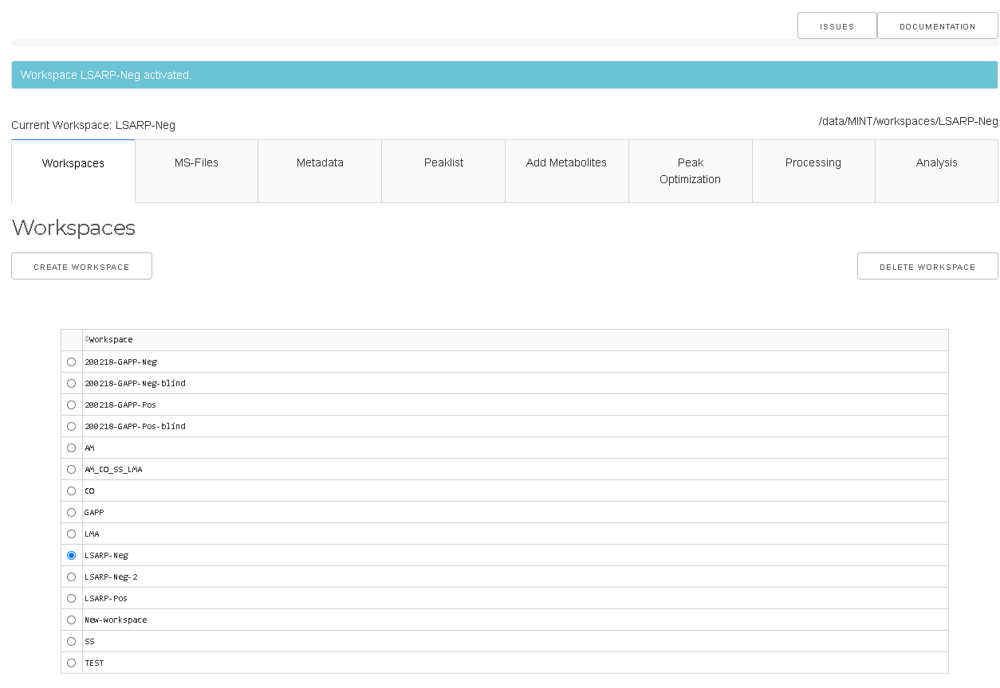
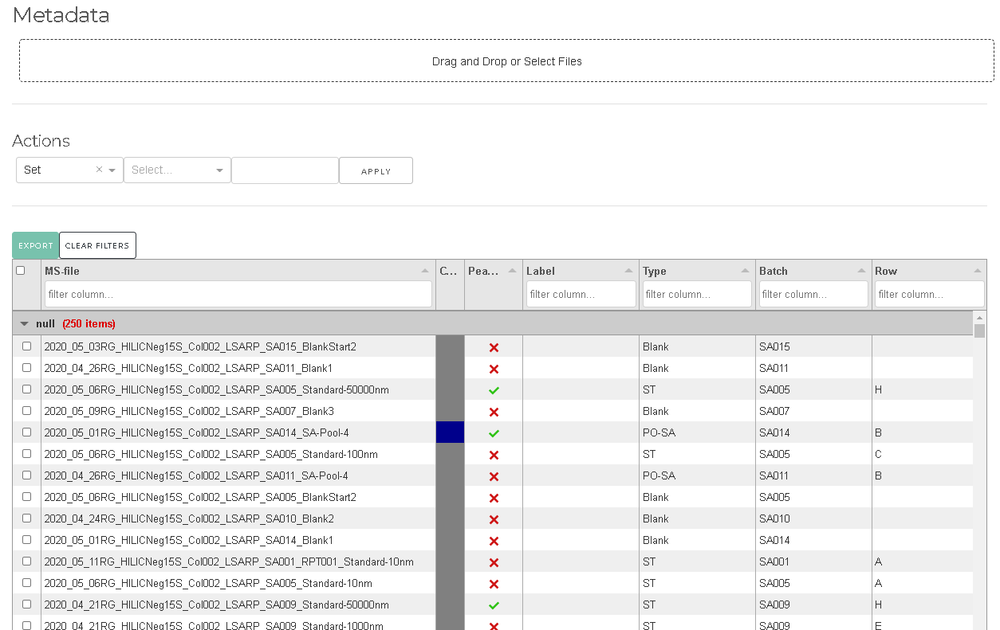
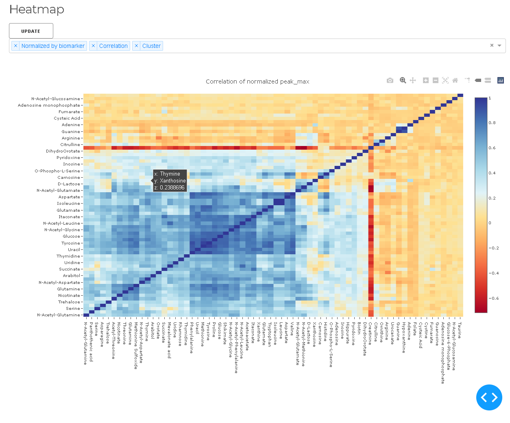
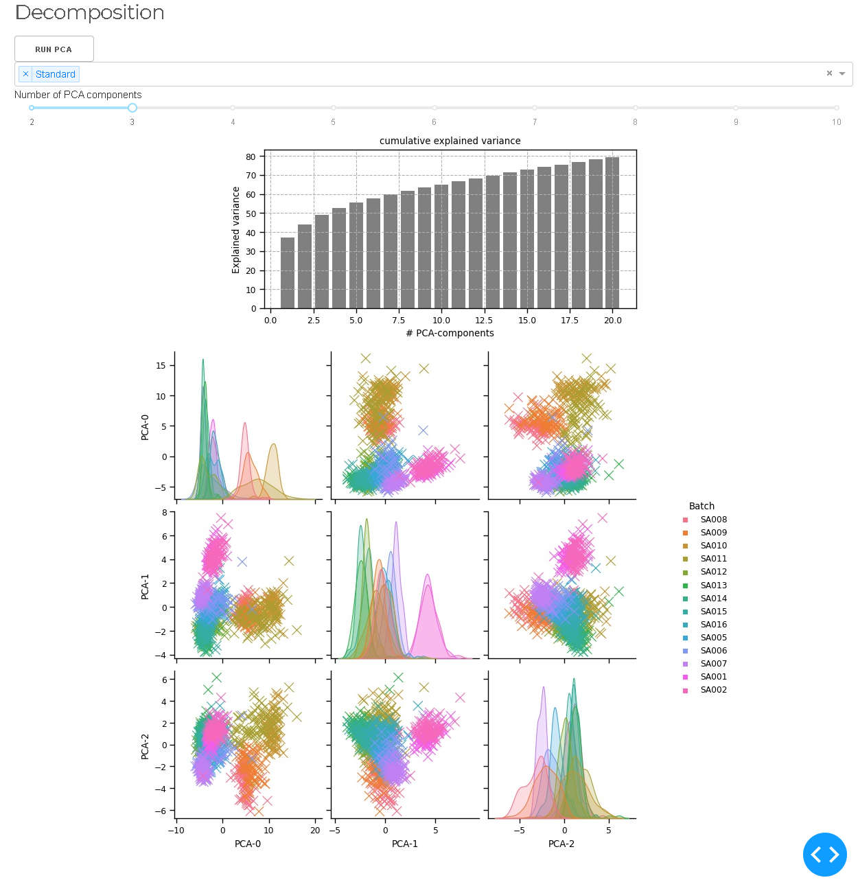

MINT GUI
Workspaces
- Add new workspaces
- Delete workspaces
- Activate workspace

A workspace is a container for project files that is separated from other workspaces. Through workspaces it is possible to work on different projects simultaneously.
All files relevant for one workspace are stored in a corresponding sub-folder of --data-dir, which by default is the folder MINT in the users home directory.
The home directory is different on different platforms. Under Windows the default folder is: C:/Users/<username>/MINT.
The path to the active workspace is always displayed above the workspace tab.
To activate a particular workspace the workspace has to be selected in the table and then the ACTIVATE button has to be clicked.
DELETE will display a popup window upon confirmation the selected workspace with all corresponding files on the harddrive in --data-dir will be removed.
MS-files
- Import mass spectrometry files (MS-file) in mzXML or mzML format
- Convert file to feather format (other formats will be removed)
- Remove MS-files from workspace

Mass-Spec files (in mzML or mzXML format) can be added under the MS-files tab by drag and drop or by using the selection form.
Due to limitations of the Plotly-Dash framework only up to 10 files can be uploaded at a time. For larger projects, the files can simply
be copied manually into the ms-files subdirectory. This will be improved in future versions of MINT.
To remove certain files the files have to be selected in the table and the DELETE SELECTED FILES has to be clicked.
The files are converted to feather format which is based on Apache Arrow. It is a representation that allows faster read into memory.
If files were added manually by copying into the ms-files subdirectory the files can be converted to feather format with the CONVERT TO FEATHER button.
Note that mzXML and mzML files will be deleted after convertion.
Metadata
- Select samples used for peak optimization by setting values in the column
PeakOpttoTrue. - Add batch labels to analyse for possible batch effects.
- Add labels to analyse for differences of different groups (e.g. treatment and control)
- Add types for different files e.g. biological sample, quality control sample, standards etc in order to include ore exclude certain types during analysis.
- Add other types of metadata.

Metadata for the individual files can be edited in the Metadata tab. This data can be used to group results e.g. by batch or by label as well as types.
You want to edit metadata table to:
Targetlists
- Import peaklist from CSV file or add new peaks manually
- Rename peaks definitions or change parameters
- Delete peak definitions

Targetlists are collection of peak definitions for the extraction of MS intensities beloning to individual metabolites. Targetlists can be provided as Excel or CSV files. Targetlists are explained in more detail here. Files can be uploaded via the drag and drop area or the selection tool. The targetlists can be edited in place or with the optimization tools.
Add Metabolites
- Search for metabolites from ChEBI three stars database
- Add selected metabolites to peaklist (without RT estimation)

Peak Optimization
- Optimize retention times for all peaks or individual peaks
- Preview all peakshapes with quality indicator
Retention times (RT) depend on the experiment and the specific chromatographic column used. Additionally, aging of the column leads to drifts in RT that have to be accounted for. The tools in the peak optimization tab can be used to quickly review all peak definitions in the presently loaded peaklist.

The GENERATE PEAK PREVIEWS generates a preview of all peak definitions and plots the
coresponding chromatograms for all files. The peaks can be reviewed and modified one by one
with the interactive tool. FIND CLOSED PEAKS iterates through all peak definitions and
identifes the closest peak with respect to the expected RT which is displayed as black vertical line.
Manual (interactive) peak optimization
- Optimize individual peaks one by one
- Find bad peaks
- Remove peaks from peaklist
- Set expected retention time

When a peak is selected in the drop down box the chromatograms for the particular mass windows
using the peak width as defined in the peaklist is extracted and displayed. The current rt window
is visualized as green box. SET RT TO CURRENT VIEW will set the rt_min and rt_max values
to the current view and updated the peaklist accordingly.
Processing
- Run MINT (apply the extraction protocol to all files in the workspace)
- Download results
- Reset results and start again

When all peaks look good the data can be processed using RUN MINT. This will apply
the current peaklist to the MS-files in the workspace and extract additional properties.
When the results tables are present the results can be explored with the following tabs.
The generated results can be downloaded with the DOWNLOAD button.
Analysis
After running MINT the results can be downloaed or analysed using the provided tools.
For quality control purposes histograms and boxplots can be generated in the
quality control tab. The interactive heatmap tool can be used to explore the results data after RUN MINT
has been exectuted. The tool allows to explore the generated data in from of heatmaps.
General selection elements
- Include/exclude file types (based on
Typecolumn in metadata) - Include/exclude peak labels for analysis
- Set file sorting (e.g. by name, by batch etc.)
- Select group-by column for coloring and statistics
Heatmap
The first dropdown menu allows to include certain file types e.g. biological samples rather than quality control samples. The second dropdown menu distinguishes the how the heatmap is generated.
- Normalized by biomarer: devide values by column maxium.
- Cluster: Cluster rows with hierachical clustering.
- Dendrogram: Plots a dendrogram instead of row labels.
- Transpose: Switch columns and rows.
- Correlation: Calculate pearson correlation between columns.
- Show in new tab: The figure will be generated in a new independent tab. That way multiple heatmaps can be generated at the same time.
Correlation of (scaled) peak_max

Distributions
- Plot histograms
- Density distributions
- Boxplots

The MS-files can be grouped based on the values in the metadata table. If nothing is selected the data will not be grouped in order to plot the overall distribution. The second dropdown menu allows to select one or multple kinds of graphs that to generate. The third dropdown menu allows to include certain file types. For example, the analysis can be limited to only the biological samples if such a type has been defined in the type column of the metadata table.
The checkbox can be used to create a dense view. If the box is unchecked the output will be visually grouped into an individual section for each metabolite.
PCA
- Perform Principal Component Analysis (PCA)
- Plot projections to first N principal components
- Contributions of original variables to each component.

Hierarchical clustering
Plotting
MINT comes with a flexible and powerful plotting interface that is based on the powerful Seaborn library.
- Bar plots
- Violin plots
- Boxen plot
- Scatter plots
- and more...